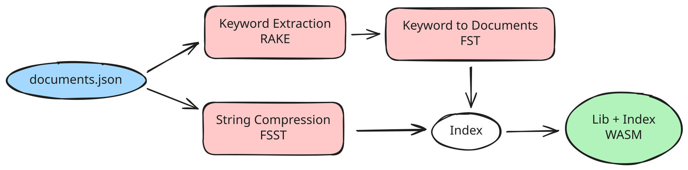
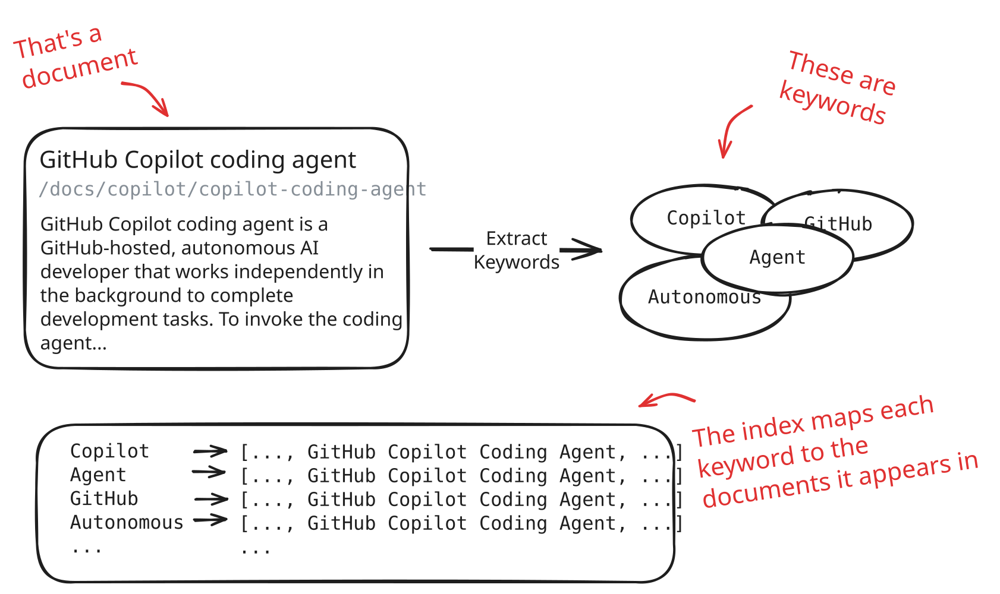

构建 docfind：使用 Rust 和 WebAssembly 实现快速客户端搜索
2026年1月15日，作者 João Moreno
如果你最近访问过 VS Code 网站，你可能会注意到一些新变化：一个快速、响应灵敏的搜索体验，感觉几乎是即时的。
这一体验的背后是 docfind，这是我们构建的一个搜索引擎，它使用 WebAssembly 完全在你的浏览器中运行。在这篇文章中，我想分享 docfind 的故事：这是一段从一篇十年前的关于自动机理论的博客文章到修补 WebAssembly 二进制文件的旅程。
问题
我目前是 VS Code 团队的软件工程经理，所以如今我没有太多时间编写代码。当我写代码的时候，很少是在不熟悉的领域。但有些问题会一直困扰你，直到你采取行动。
直到最近，我们的网站还只有那种基本的搜索体验：你输入查询，它就会将你重定向到由传统搜索引擎支持的搜索结果。这与当今开发者的期望相去甚远。我希望搜索结果能像许多其他网站那样，随着你的输入即时出现。它应该像 VS Code 的快速打开（Ctrl+P）那样响应迅速。
我和同事 Nick Trogh 一起研究了各种替代方案。情况大致如下：
- Algolia：最先进的搜索即服务。但我想要一个纯客户端的解决方案。
- TypeSense：强大的开源搜索，但与 Algolia 一样需要服务端代码。此外，还需要额外维护和监控一个服务。
- Lunr.js：基于 JavaScript 的客户端搜索，听起来很有前景。我们用我们的文档（约 3 MB 的 markdown）进行了测试，但它生成的索引文件大约有 10 MB。太大了。
- Stork Search：基于 WebAssembly 的客户端搜索，演示效果很好。但当我们测试时，索引仍然相当大，而且该项目似乎已不再维护。
这些选项都没有达到最佳平衡点：快速、客户端运行、紧凑且易于托管和运营。我开始想我们是否可以自己构建一个。
灵感
思考客户端搜索让我想起多年前读过的一篇博客文章。它是由 Andrew Gallant（burntsushi）——ripgrep 的创建者——撰写的，标题是 Index 1,600,000,000 Keys with Automata and Rust。这篇发表于近十年前的文章解释了如何使用有限状态转换器（FST）以紧凑的二进制格式索引海量字符串数据，并支持快速查找，包括正则表达式和模糊匹配。
关键的洞察是，FST 可以将排序后的字符串键存储在一个状态机中，这个状态机既内存高效又查询快速。更棒的是，Andrew 发布了一个名为 fst 的 Rust 库，正好实现了这一点。
如果我们能使用 FST 来索引从文档中提取的关键词呢？用户输入查询，我们通过 FST 将其与关键词匹配，然后返回相关文档列表，所有这些都在浏览器中完成，无需与服务器往返通信。
但是，我们如何获取这些文档关键词呢？而且，考虑到所有字符串都需要存储在内存中，这会不会产生一个非常大的索引文件？我们能否使用压缩来创建尽可能小的索引？这引导我找到了另外两块拼图：
- RAKE（快速自动关键词提取）：一种从文本中提取有意义的关键词和短语的算法。给它一篇文档，它会返回按重要性排名的关键词。
- FSST（快速静态符号表）：一种为短字符串优化的压缩算法。由于我们需要在内存中存储文档标题、类别和摘要片段，压缩有助于保持索引较小。
有了 FST 用于快速关键词查找，RAKE 用于关键词提取，FSST 用于字符串压缩，我有了技术基础。现在我只需要用 Rust 构建它——Rust 是我并不特别擅长的一种语言——并且是在我从日常工作中挤出的有限时间里完成。
解决方案
我最终创建了一个单一的 CLI 工具 docfind，旨在每次构建网站时从我们的网站文档创建索引文件。为了创建索引文件，这个 CLI 工具的用户应该不需要除 docfind 本身之外的任何外部依赖。该索引文件最终是一个单一的 WebAssembly 模块，通过 HTTP 方便地提供给访问者。当访问者来到我们的网站时，他们的浏览器会在后台下载 WebAssembly 模块，并使用它来支持搜索功能。
构建索引
以下是 docfind 如何将文档集合（documents.json）转换为相应索引文件（docfind_bg.wasm）的图示：

Docfind 首先读取一个包含文档信息的 JSON 文件（标题、类别、URL、正文文本）。对于每个文档，它使用 RAKE 提取关键词，分配相关度分数，并构建一个将关键词映射到文档索引的 FST。所有文档字符串都使用 FSST 进行压缩。然后 FST 和压缩后的字符串被打包成一个二进制数据块，代表实际的索引。

表示索引的数据结构出人意料地简单：
pub struct Index {
/// FST mapping keywords to document indices
fst: Vec<u8>,
/// FSST-compressed document strings (title, category, href, body)
document_strings: FsstStrVec,
/// For each keyword index, a list of (document_index, score) pairs
keyword_to_documents: Vec<Vec<(usize, u8)>>,
}索引存储关键词并将其映射到 keyword_to_documents 中的索引。每个条目指向带有相关度分数的相关文档。文档字符串以压缩形式存储，仅在需要显示时才解压。
现在，我们可以将该索引数据结构转储到一个二进制文件中，将其提供给我们的网站访问者，并在网站上设置某个 WebAssembly 模块来解析它并使用 FST 库执行搜索操作。但事情在这里变得有趣起来。与其将索引作为单独的二进制文件发布，docfind 将其直接嵌入到搜索库 WebAssembly 模块中，使访问者在打算在网站上搜索时只需获取一个单一的 HTTP 资源。
搜索索引
那么客户端发生了什么？当用户输入查询时，WebAssembly 模块（代码和文档索引）被加载到内存中，通过遍历 FST 数据结构将该查询作为搜索操作执行。我们发现使用 Levenshtein 自动机（用于容错拼写）和前缀匹配来获取更相关的匹配结果是很有效的。最后，通过组合多个匹配关键词的分数、按需解压相关文档字符串，并将排名结果以 JavaScript 对象的形式返回，从而生成搜索结果。
挑战
这个项目中最棘手的部分不是搜索算法或关键词提取，而是将索引嵌入到 WebAssembly 二进制文件中。
最朴素的方法是使用 Rust 的 include_bytes! 宏在编译时将索引烘焙到 WebAssembly 模块中。但这意味着每次文档更改时都需要重新编译 WebAssembly 模块。相反，我想要一个预编译的 WASM "模板"，CLI 工具可以用更新的索引对其进行修补。
这意味着我需要静态创建一个带有空索引的 WebAssembly 模块模板，并将其嵌入到 docfind 中。然后，docfind 可以：
- 解析嵌入的 WebAssembly 模块以了解其结构
- 查找内存段并计算索引需要多少额外空间
- 将索引添加为新的数据段，并相应地更新数据计数段
- 定位占位符全局变量并用实际的索引位置进行修补
- 输出一个有效的 WebAssembly 模块
WebAssembly 模块模板声明了两个带有特殊标记值的占位符全局变量：
#[unsafe(no_mangle)]
pub static mut INDEX_BASE: u32 = 0xdead_beef;
#[unsafe(no_mangle)]
pub static mut INDEX_LEN: u32 = 0xdead_beef;在运行时，搜索函数使用这些变量来定位嵌入的索引，并从原始字节中解析它：
static INDEX: OnceLock<Index> = OnceLock::new();
pub fn search(query: &str, max_results: Option<usize>) -> Result<JsValue, JsValue> {
let index = INDEX.get_or_init(|| {
let raw_index = unsafe {
std::slice::from_raw_parts(INDEX_BASE as *const u8, INDEX_LEN as usize)
};
Index::from_bytes(raw_index).expect("Failed to deserialize index")
});
// ... perform search
}CLI 工具扫描 WASM 模板的导出段以查找这些全局变量，读取全局段以获取它们的内存地址，然后修补包含那些 0xdead_beef 值的数据段，用实际的索引基地址和长度替换它们：
// Patch the data if it contains the INDEX_BASE or INDEX_LEN addresses
if index_base_global_address >= &start && index_base_global_address < &end {
data[base_relative_offset..base_relative_offset + 4]
.copy_from_slice(&(index_base as i32).to_le_bytes());
data[length_relative_offset..length_relative_offset + 4]
.copy_from_slice(&(raw_index.len() as i32).to_le_bytes());
}
// Add index as new data segment
data_section.active(
0,
&ConstExpr::i32_const(index_base as i32),
raw_index.iter().copied(),
);说得委婉些，这并不简单。理解 WASM 二进制格式、搞清楚全局变量如何存储和引用、计算内存偏移量——这些都是很容易让一个业余项目脱轨的问题。
突破
我必须坦诚，如果没有使用 GitHub Copilot agents，我很可能无法完成这个项目。作为一个不再每天写代码的经理，用 Rust 这样一个以陡峭学习曲线著称的语言来解决项目是很有野心的。我不是 Rust 专家。我对借用检查器没有肌肉记忆。而且我肯定对 WebAssembly 二进制格式没有深入了解。但我对这一切的发展方向有一个大致的把握。Copilot 帮助我填补了空白并解决了难题。
研究与探索。 在评估 FST、RAKE 和 FSST 时，我使用 Copilot 来理解这些库的工作原理，提出澄清问题，并交换思路。这就像拥有一个随时可用的知识渊博的同事。
高效的 Rust 开发。 这可能是最大的收获。Copilot 的 Next Edit Suggestions 把我变成了一个高效的 Rust 程序员。我不再花精力与借用检查器作斗争或查找语法。Copilot 处理了机械性的部分，让我专注于逻辑。
脚手架搭建 WASM 目标。 当我请 Copilot 为项目添加 WebAssembly 输出目标时，它不只是添加了配置，它还推断出我想要导出一个搜索函数，并用正确的 wasm-bindgen 注解搭建了整个 lib.rs。它甚至告诉我应该运行哪个命令来构建它。
docfind 库。 Copilot 帮助我为 docfind 搭建了仓库的脚手架，包括创建一个可工作的演示页面以及性能展示数据。
攻克难点。 WASM 二进制操作是这个项目的技术关键。理解如何定位全局变量、修补数据段和更新内存段需要深入了解我以前从未接触过的细节。Copilot 帮助我理解 WASM 二进制格式，建议了正确的 wasmparser 和 wasm-encoder API，并在我的修补二进制文件无效时帮助调试问题。
我相信如果没有 Copilot，这个项目会花费我更长的时间，而且这还是假设我不会在某个地方放弃。当你时间有限并且在自己专业领域之外工作时，我发现有一个能够填补知识空白并处理样板代码的 AI 助手不仅仅是便利，它就是交付和放弃之间的区别。
成果
如今，docfind 为 VS Code 文档网站的搜索体验提供支持。你可以在 docfind README 中查看当前的性能指标，其中包含一个交互式演示，完全在你的浏览器中搜索 50,000 篇新闻文章。
对于 VS Code 网站（约 3 MB 的 markdown，约 3,700 篇按标题划分的文档）：
- 索引大小：未压缩约 5.9 MB，使用 Brotli 压缩后约 2.7 MB
- 搜索速度：每次查询约 0.4 毫秒（在我的 M2 MacBook Air 上）
- 网络：单个 WebAssembly 模块，仅在用户表示搜索意图时才下载
无需维护服务器。无需管理 API 密钥。没有持续成本。只有一个自包含的 WebAssembly 模块，完全在浏览器中运行，在构建时创建。
亲自尝试
我们已经将 docfind 开源，你现在就可以将它用于你自己的静态网站。安装非常简单：
curl -fsSL https://microsoft.github.io/docfind/install.sh | sh或者，如果你使用的是 Windows：
irm https://microsoft.github.io/docfind/install.ps1 | iex准备一个包含你的文档的 JSON 文件，运行 docfind documents.json output，你将得到 docfind.js 和 docfind_bg.wasm，可以直接在你的网站中使用。你需要自己搭建用于显示搜索结果的客户端 UI（你总是可以使用 GitHub Copilot 来创建一个 😉）。
构建 docfind 让我重新认识到当初成为工程师的原因：用优雅的技术解决真实问题的乐趣。它也证明了像 Copilot 这样的 AI 工具正在改变可能性，让我们能够在时间和专业知识的限制下，去攻克那些原本遥不可及的项目。最后，向 rust-analyzer VS Code 扩展致敬，如果你在 VS Code 中使用 Rust，这是一个必备工具。
如果你有问题或反馈，欢迎在 docfind 仓库 上提交 issue。我们很乐意听到你的使用体验。
快乐编码！💙